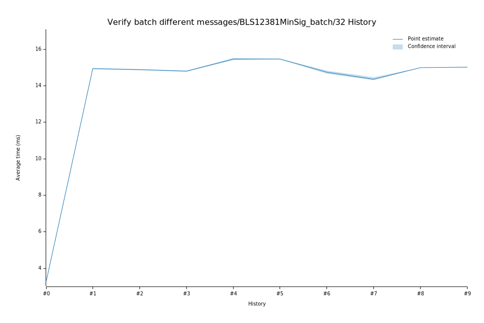

# 42023-02-09T12:52:53Z
|
Lower Bound |
Estimate |
Upper Bound |
| Value: |
15.40ms |
15.46ms |
15.53ms |
| Change in Value: |
+4.2526% |
+4.7466% |
+5.3313% |
No change in performance detected.
# 32023-02-08T19:00:55Z
|
Lower Bound |
Estimate |
Upper Bound |
| Value: |
14.77ms |
14.81ms |
14.84ms |
| Change in Value: |
-0.7998% |
-0.4746% |
-0.1450% |
No change in performance detected.
# 22022-12-05T08:49:21Z
|
Lower Bound |
Estimate |
Upper Bound |
| Value: |
14.85ms |
14.88ms |
14.90ms |
| Change in Value: |
-0.7594% |
-0.4444% |
-0.1206% |
No change in performance detected.
# 12022-11-14T12:03:48Z
|
Lower Bound |
Estimate |
Upper Bound |
| Value: |
14.90ms |
14.94ms |
14.97ms |
| Change in Value: |
+345.57% |
+348.35% |
+351.14% |
No change in performance detected.
# 02022-11-04T13:41:56Z
|
Lower Bound |
Estimate |
Upper Bound |
| Value: |
3.31ms |
3.33ms |
3.35ms |